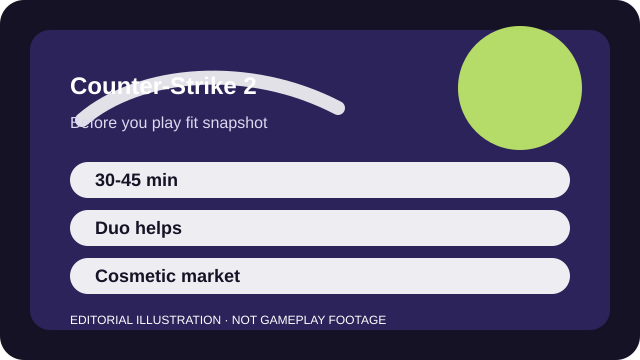

BEFORE YOU PLAY
What this page is and is not
This is a sourced editorial fit profile. It is designed to help with a yes-or-no play decision, and it does not claim a scored hands-on review.
If you want a bare-bones ruleset where tiny positioning and utility errors matter, CS2 still delivers. If you need class variety or constant unlocks, it can feel almost austere.
The first-session loop to judge is simple: Manage money, control space, trade cleanly, and use utility well enough to win bomb-plant rounds.
There is very little account-driven progression; the reward loop is mostly skill growth, rank, and cosmetics.

FIT SNAPSHOT
Counter-Strike 2 at a glance
| Genre | Tactical shooter |
|---|---|
| Platforms | PC |
| Business model | Free-to-play tactical shooter with cosmetic market and case-driven spending. |
| Typical session | 30-45 minute matches once you include full rounds and queue time. |
| Play style | classic tactical shooter |
| Learning barrier | Counter-Strike 2 is mechanically simple to read and still very demanding to execute well. |
| Social shape | You can queue solo, but the game shines with a duo or team that can trade and call without panic. |
WHO IT FITS
Best fit, likely friction, and the social reality
PC players who want classic tactical shooting and almost endless room to refine fundamentals
anyone who wants forgiving recoil, heavy class variety, or short low-stakes sessions
You can queue solo, but the game shines with a duo or team that can trade and call without panic.
There is very little account-driven progression; the reward loop is mostly skill growth, rank, and cosmetics.
FIRST SESSION PLAN
How to test the fit in one evening
- Use Deathmatch or casual play to learn recoil feel before asking ranked to teach you everything.
- Learn one map's bombsites, rotate routes, and two common angles per side.
- Stick to a narrow buy routine so economy decisions do not overload your early rounds.
- Focus on trading with teammates instead of trying to carry fights alone.
Use the first session to answer these fit questions instead of judging rank, win rate, or store value immediately.
- Do you want skill expression without class abilities or hero kits?
- Are you willing to learn maps slowly rather than rely on reaction speed alone?
- Will minimal account progression feel refreshingly clean or emotionally flat?
TIME, COST, AND COMMITMENT
What you are really signing up for
| Session budget | 30-45 minute matches once you include full rounds and queue time. |
|---|---|
| Social demand | You can queue solo, but the game shines with a duo or team that can trade and call without panic. |
| Progression shape | There is very little account-driven progression; the reward loop is mostly skill growth, rank, and cosmetics. |
| Spending pressure | Core play is free. Spending is mostly cosmetic, though the market layer can become a hobby of its own. |
Even before you care about rank, learning the map pool and economy rhythm asks for repeated, focused sessions.
Core play is free. Spending is mostly cosmetic, though the market layer can become a hobby of its own.
SOURCES AND LIMITS
What was checked, and what can change
- Premier rules, maps, and matchmaking priorities can shift over time.
- Weapon balance and utility timings move with competitive patches.
- Storefront and cosmetic market conditions are separate from the gameplay fit described here.
This profile uses official game pages and defensible general product knowledge to frame the player fit. It does not claim live testing across every platform, accessibility need, or current event rotation.